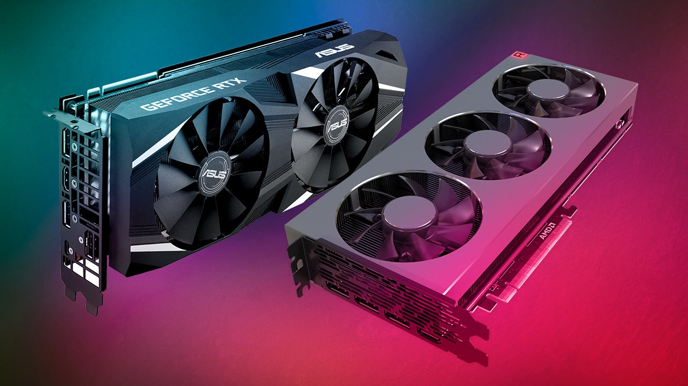
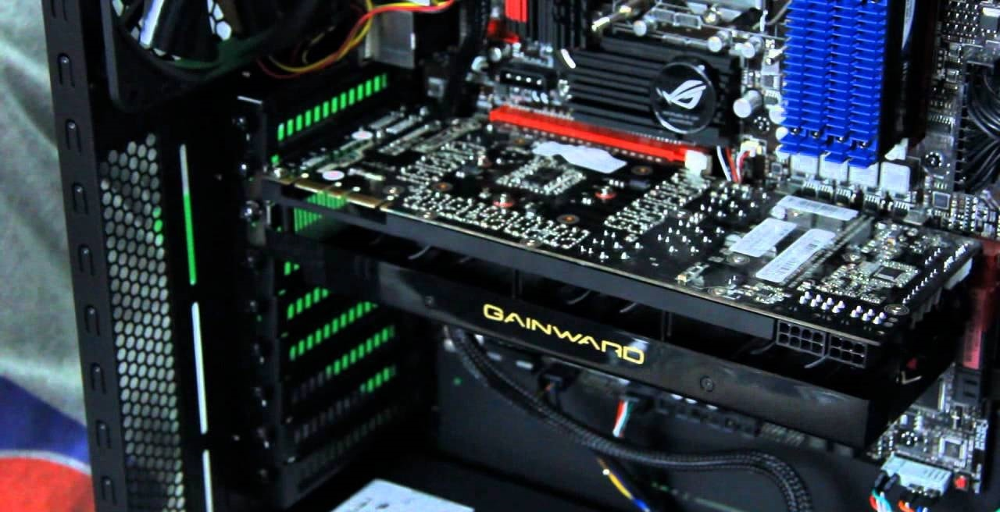

GPU
The GPU, or graphics processing unit, is a processor that renders and displays all images and videos on the computer screen. It decodes and renders everything you see on the screen. It works alongside the central processing unit (CPU). The CPU does all the background calculations and organization, the GPU uses that data to display everything on the screen. The GPU can come in two main forms. It can either be a small processing chip found onboard the CPU, or it can be its own stand alone card.
Onboard graphics (when the GPU is part of the CPU chip) are much weaker and not as powerful as standalone graphics cards. For PC’s where you plan to do a lot of processing-heavy work (editing videos/images, gaming, 3d rendering, animation) you will need a standalone graphics card. As such, in this guide, we will talk about standalone graphics cards. Just like the CPU, the graphics card also attaches to the motherboard. The GPU also produces a lot of heat, and so you need fans to cool it. But unlike CPU’s, fans usually come attached to the graphics card itself, so you do not need to worry about buying anything extra to cool the GPU.
Click the next page button to learn about storage!